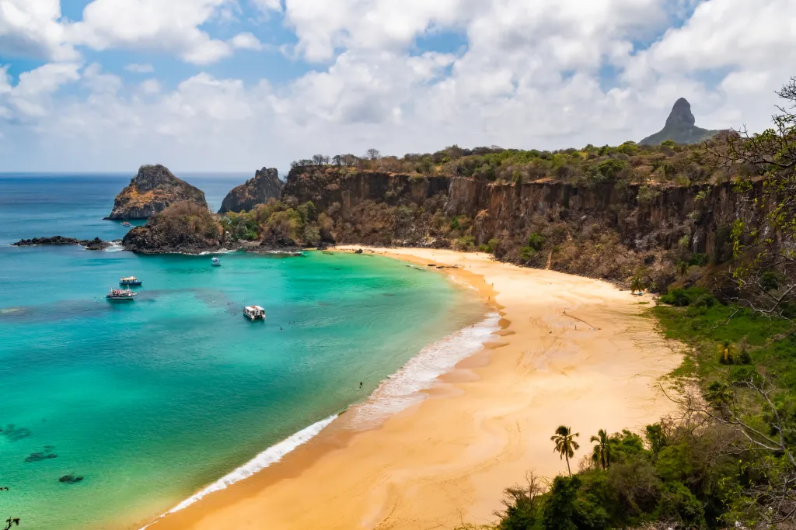
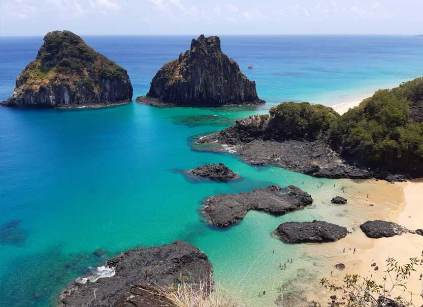
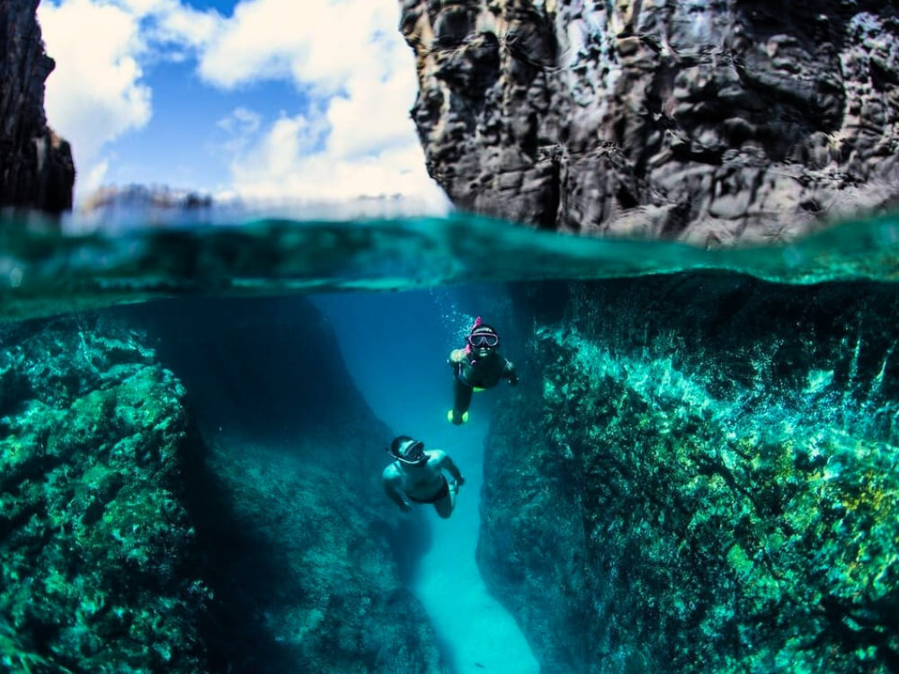

Sobre o destino
Fernando de Noronha é um dos destinos de praia mais famosos do Brasil, conhecido por suas águas cristalinas, vida marinha rica e paisagens naturais preservadas.
Pontos Turísticos Imperdíveis:
- Baía do Sancho: Uma das praias mais bonitas do mundo.
- Baía dos Porcos: Águas cristalinas e visual paradisíaco.
- Praia do Leão: Natureza preservada.
- Cacimba do Padre: Ótima para surfe.
- Mergulho: Vida marinha rica e águas transparentes.
Guia Rápido

Melhor época: Agosto a dezembro - mar mais calmo e águas cristalinas.

Como chegar: Voos partem principalmente de Recife e Natal até o aeroporto de Fernando de Noronha.

Idioma: Português - inglês é usado em hotéis e passeios turísticos por conta de turistas extrangeiros.

Moeda: Real (R$) - cartões são aceitos, mas leve dinheiro para locais menores.
Custos Médios
- Hotel: R$300 - R$1200 por noite
- Alimentação: R$50 - R$150 por refeição
- Transporte: R$50 - R$120
Localização
Galeria de Fotos


